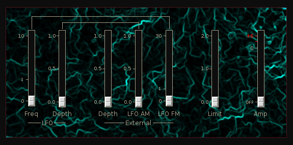

Tremolo
 Previous( flngr )
Next( mixer )
Home
Contents
Previous( flngr )
Next( mixer )
Home
Contents
Simple tremolo effect

LFO Freq LFO frequency
LFO Depth Modulation depth
External Depth Modulation depth by external signal
External LFO AM External signal control of LFO amplitude
External LFO FM External signal control of LFO frequency
Limit Modulation signal limiter
Amp Main output amplitude
Buses
inbus Audio inbut
outbus Audio output
xbus External control input
lfoOutbus INternal LFO output
Tremolo Parameters
- lfoFreq, LFO frequency (0,10)
- modDepth, Modulation depth (0,1)
- limit, Mod signal limit (0,2)
- xDepth, External signal mod depth (0,1)
- xLfoAmp, External signal to LFO amp (0,1)
- xLfoFreq, External signal to LFO freq (0,30)
- amp, Main linear amplitude (0,2)
Previous( flngr ) Next( mixer ) Home Contents